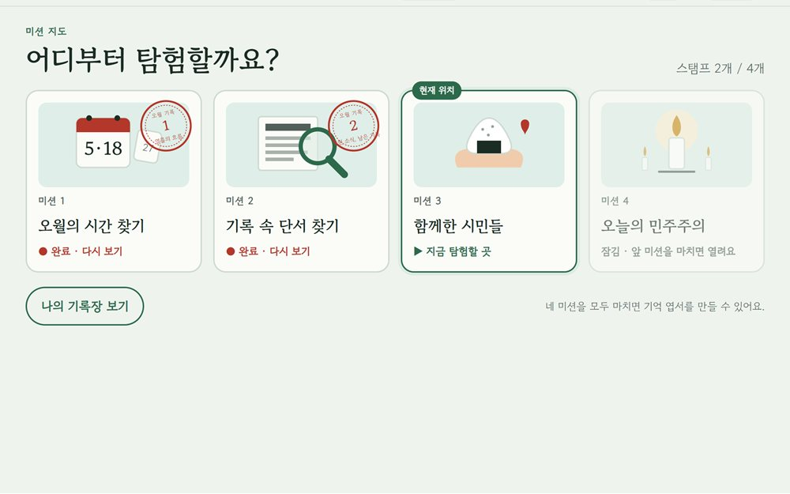
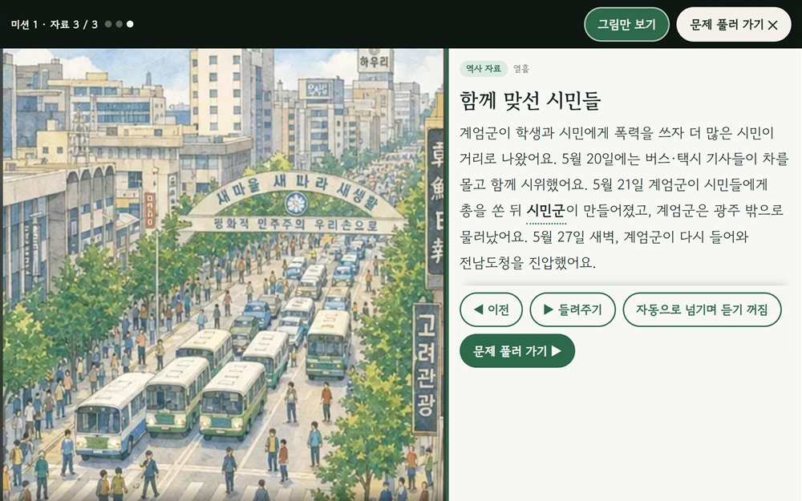
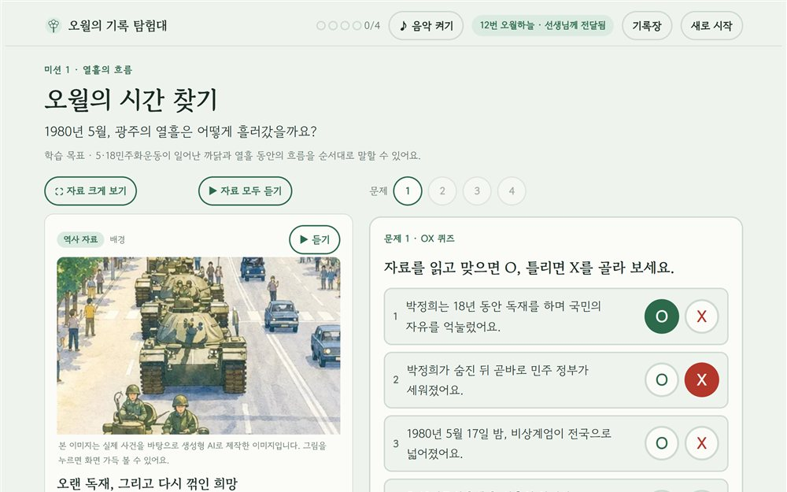
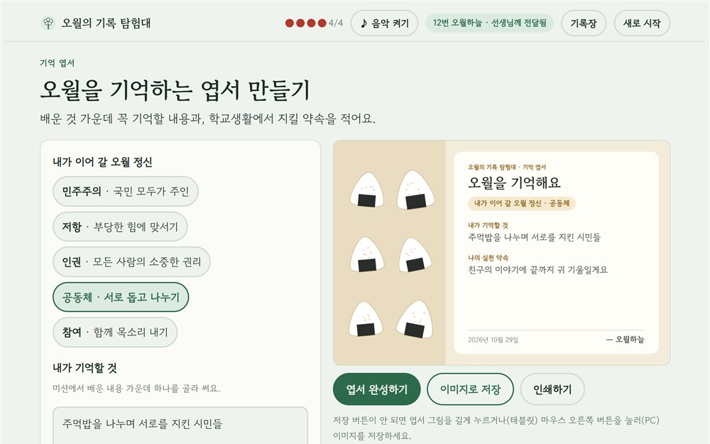

1열흘을 따라가는 미션 4개
오월의 시간, 기록 속 단서, 함께한 시민들, 오늘의 민주주의 순서로 5·18을 탐험해요.
기록연구원이 되어 자료 속 단서를 찾으며 5·18민주화운동을 알아보는 웹앱
1980. 5. 18 전남대 앞에서 시작 5. 21 계엄군의 집단 발포 5. 27 도청 진압

오월의 시간, 기록 속 단서, 함께한 시민들, 오늘의 민주주의 순서로 5·18을 탐험해요.

그 시절 장면 그림과 쉬운 글을 읽고, 들려주기로 자료를 들을 수 있어요.

OX, 순서 맞추기, 근거 찾기 문제를 풀며 스탬프를 모아요.

이어 갈 오월 정신을 고르고, 기억할 것과 실천 약속을 엽서로 남겨요.
찍고 번호와 별명으로
체험해 보세요
구글 로그인 후
학급방을 만들어 체험
그림은 실제 사건을 바탕으로 생성형 AI로 제작한 이미지입니다. · 학생은 실명 대신 별명을 써요.